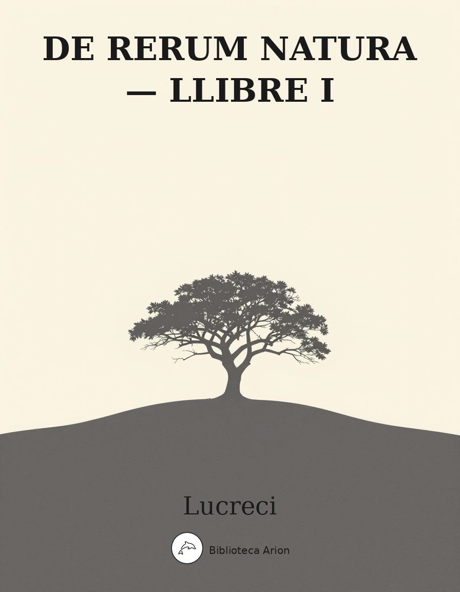

De Rerum Natura — Llibre I
De Rerum Natura — Liber Primus
Primer llibre del poema filosòfic epicuri «De la natura de les coses». Lucreci exposa els principis fonamentals de la física atomista: res no sorgeix del no-res, res no es destrueix completament, la matèria es compon d'àtoms invisibles i buit. Dedicat a Memmi, s'obre amb un himne a Venus com a força generatriu de la natura i inclou l'elogi d'Epicur.
Aeneadum genetrix, hominum divomque voluptas,
alma Venus, caeli subter labentia signa
quae mare navigerum, quae terras frugiferentis
concelebras, per te quoniam genus omne animantum
concipitur visitque exortum lumina solis:
te, dea, te fugiunt venti, te nubila caeli
adventumque tuum, tibi suavis daedala tellus
summittit flores, tibi rident aequora ponti
placatumque nitet diffuso lumine caelum.
nam simul ac species patefactast verna diei
et reserata viget genitabilis aura favoni,
aeriae primum volucris te, diva, tuumque
significant initum perculsae corda tua vi.
inde ferae pecudes persultant pabula laeta
et rapidos tranant amnis: ita capta lepore
te sequitur cupide quo quamque inducere pergis.
denique per maria ac montis fluviosque rapacis
frondiferasque domos avium camposque virentis
omnibus incutiens blandum per pectora amorem
efficis ut cupide generatim saecla propagent.
quae quoniam rerum naturam sola gubernas
nec sine te quicquam dias in luminis oras
exoritur neque fit laetum neque amabile quicquam,
te sociam studeo scribendis versibus esse,
quos ego de rerum natura pangere conor
Memmiadae nostro, quem tu, dea, tempore in omni
omnibus ornatum voluisti excellere rebus.
quo magis aeternum da dictis, diva, leporem.
effice ut interea fera moenera militiai
per maria ac terras omnis sopita quiescant;
nam tu sola potes tranquilla pace iuvare
mortalis, quoniam belli fera moenera Mavors
armipotens regit, in gremium qui saepe tuum se
reiicit aeterno devictus vulnere amoris,
atque ita suspiciens tereti cervice reposta
pascit amore avidos inhians in te, dea, visus
eque tuo pendet resupini spiritus ore.
hunc tu, diva, tuo recubantem corpore sancto
circum fusa super, suavis ex ore loquellas
funde petens placidam Romanis, incluta, pacem;
nam neque nos agere hoc patriai tempore iniquo
possumus aequo animo nec Memmi clara propago
talibus in rebus communi desse saluti.
omnis enim per se divum natura necessest
immortali aevo summa cum pace fruatur
semota ab nostris rebus seiunctaque longe;
nam privata dolore omni, privata periclis,
ipsa suis pollens opibus, nihil indiga nostri,
nec bene promeritis capitur nec tangitur ira.
Humana ante oculos foede cum vita iaceret
in terris oppressa gravi sub religione,
quae caput a caeli regionibus ostendebat
horribili super aspectu mortalibus instans,
primum Graius homo mortalis tollere contra
est oculos ausus primusque obsistere contra;
quem neque fama deum nec fulmina nec minitanti
murmure compressit caelum, sed eo magis acrem
inritat animi virtutem, effringere ut arta
naturae primus portarum claustra cupiret.
ergo vivida vis animi pervicit et extra
processit longe flammantia moenia mundi
atque omne immensum peragravit mente animoque,
unde refert nobis victor quid possit oriri,
quid nequeat, finita potestas denique cuique
qua nam sit ratione atque alte terminus haerens.
quare religio pedibus subiecta vicissim
opteritur, nos exaequat victoria caelo.
Illud in his rebus vereor, ne forte rearis
impia te rationis inire elementa viamque
indugredi sceleris. quod contra saepius illa
religio peperit scelerosa atque impia facta.
Aulide quo pacto Triviai virginis aram
Iphianassai turparunt sanguine foede
ductores Danaum delecti, prima virorum.
cui simul infula virgineos circum data comptus
ex utraque pari malarum parte profusast,
et maestum simul ante aras adstare parentem
sensit et hunc propter ferrum celare ministros
aspectuque suo lacrimas effundere civis,
muta metu terram genibus summissa petebat.
nec miserae prodesse in tali tempore quibat,
quod patrio princeps donarat nomine regem;
nam sublata virum manibus tremibundaque ad aras
deductast, non ut sollemni more sacrorum
perfecto posset claro comitari Hymenaeo,
sed casta inceste nubendi tempore in ipso
hostia concideret mactatu maesta parentis,
exitus ut classi felix faustusque daretur.
tantum religio potuit suadere malorum.
Tutemet a nobis iam quovis tempore vatum
terriloquis victus dictis desciscere quaeres.
quippe etenim quam multa tibi iam fingere possunt
somnia, quae vitae rationes vertere possint
fortunasque tuas omnis turbare timore!
et merito; nam si certam finem esse viderent
aerumnarum homines, aliqua ratione valerent
religionibus atque minis obsistere vatum.
nunc ratio nulla est restandi, nulla facultas,
aeternas quoniam poenas in morte timendum.
ignoratur enim quae sit natura animai,
nata sit an contra nascentibus insinuetur
et simul intereat nobiscum morte dirempta
an tenebras Orci visat vastasque lacunas
an pecudes alias divinitus insinuet se,
Ennius ut noster cecinit, qui primus amoeno
detulit ex Helicone perenni fronde coronam,
per gentis Italas hominum quae clara clueret;
etsi praeterea tamen esse Acherusia templa
Ennius aeternis exponit versibus edens,
quo neque permaneant animae neque corpora nostra,
sed quaedam simulacra modis pallentia miris;
unde sibi exortam semper florentis Homeri
commemorat speciem lacrimas effundere salsas
coepisse et rerum naturam expandere dictis.
qua propter bene cum superis de rebus habenda
nobis est ratio, solis lunaeque meatus
qua fiant ratione, et qua vi quaeque gerantur
in terris, tunc cum primis ratione sagaci
unde anima atque animi constet natura videndum,
et quae res nobis vigilantibus obvia mentes
terrificet morbo adfectis somnoque sepultis,
cernere uti videamur eos audireque coram,
morte obita quorum tellus amplectitur ossa.
Quod super est, vacuas auris animumque sagacem
semotum a curis adhibe veram ad rationem,
ne mea dona tibi studio disposta fideli,
intellecta prius quam sint, contempta relinquas.
nam tibi de summa caeli ratione deumque
disserere incipiam et rerum primordia pandam,
unde omnis natura creet res, auctet alatque,
quove eadem rursum natura perempta resolvat,
quae nos materiem et genitalia corpora rebus
reddunda in ratione vocare et semina rerum
appellare suemus et haec eadem usurpare
corpora prima, quod ex illis sunt omnia primis.
Nec me animi fallit Graiorum obscura reperta
difficile inlustrare Latinis versibus esse,
multa novis verbis praesertim cum sit agendum
propter egestatem linguae et rerum novitatem;
sed tua me virtus tamen et sperata voluptas
suavis amicitiae quemvis efferre laborem
suadet et inducit noctes vigilare serenas
quaerentem dictis quibus et quo carmine demum
clara tuae possim praepandere lumina menti,
res quibus occultas penitus convisere possis.
hunc igitur terrorem animi tenebrasque necessest
non radii solis neque lucida tela diei
discutiant, sed naturae species ratioque.
Principium cuius hinc nobis exordia sumet,
nullam rem e nihilo gigni divinitus umquam.
quippe ita formido mortalis continet omnis,
quod multa in terris fieri caeloque tuentur,
quorum operum causas nulla ratione videre
possunt ac fieri divino numine rentur.
quas ob res ubi viderimus nil posse creari
de nihilo, tum quod sequimur iam rectius inde
perspiciemus, et unde queat res quaeque creari
et quo quaeque modo fiant opera sine divom.
Nam si de nihilo fierent, ex omnibus rebus
omne genus nasci posset, nil semine egeret.
e mare primum homines, e terra posset oriri
squamigerum genus et volucres erumpere caelo;
armenta atque aliae pecudes, genus omne ferarum,
incerto partu culta ac deserta tenerent.
nec fructus idem arboribus constare solerent,
sed mutarentur, ferre omnes omnia possent.
quippe ubi non essent genitalia corpora cuique,
qui posset mater rebus consistere certa?
at nunc seminibus quia certis quaeque creantur,
inde enascitur atque oras in luminis exit,
materies ubi inest cuiusque et corpora prima;
atque hac re nequeunt ex omnibus omnia gigni,
quod certis in rebus inest secreta facultas.
Praeterea cur vere rosam, frumenta calore,
vites autumno fundi suadente videmus,
si non, certa suo quia tempore semina rerum
cum confluxerunt, patefit quod cumque creatur,
dum tempestates adsunt et vivida tellus
tuto res teneras effert in luminis oras?
quod si de nihilo fierent, subito exorerentur
incerto spatio atque alienis partibus anni,
quippe ubi nulla forent primordia, quae genitali
concilio possent arceri tempore iniquo.
Nec porro augendis rebus spatio foret usus
seminis ad coitum, si e nilo crescere possent;
nam fierent iuvenes subito ex infantibus parvis
e terraque exorta repente arbusta salirent.
quorum nil fieri manifestum est, omnia quando
paulatim crescunt, ut par est semine certo,
crescentesque genus servant; ut noscere possis
quicque sua de materia grandescere alique.
Huc accedit uti sine certis imbribus anni
laetificos nequeat fetus submittere tellus
nec porro secreta cibo natura animantum
propagare genus possit vitamque tueri;
ut potius multis communia corpora rebus
multa putes esse, ut verbis elementa videmus,
quam sine principiis ullam rem existere posse.
Denique cur homines tantos natura parare
non potuit, pedibus qui pontum per vada possent
transire et magnos manibus divellere montis
multaque vivendo vitalia vincere saecla,
si non, materies quia rebus reddita certast
gignundis, e qua constat quid possit oriri?
nil igitur fieri de nilo posse fatendumst,
semine quando opus est rebus, quo quaeque creatae
aeris in teneras possint proferrier auras.
Postremo quoniam incultis praestare videmus
culta loca et manibus melioris reddere fetus,
esse videlicet in terris primordia rerum
quae nos fecundas vertentes vomere glebas
terraique solum subigentes cimus ad ortus;
quod si nulla forent, nostro sine quaeque labore
sponte sua multo fieri meliora videres.
Huc accedit uti quicque in sua corpora rursum
dissoluat natura neque ad nihilum interemat res.
nam siquid mortale e cunctis partibus esset,
ex oculis res quaeque repente erepta periret;
nulla vi foret usus enim, quae partibus eius
discidium parere et nexus exsolvere posset.
quod nunc, aeterno quia constant semine quaeque,
donec vis obiit, quae res diverberet ictu
aut intus penetret per inania dissoluatque,
nullius exitium patitur natura videri.
Praeterea quae cumque vetustate amovet aetas,
si penitus peremit consumens materiem omnem,
unde animale genus generatim in lumina vitae
redducit Venus, aut redductum daedala tellus
unde alit atque auget generatim pabula praebens?
unde mare ingenuei fontes externaque longe
flumina suppeditant? unde aether sidera pascit?
omnia enim debet, mortali corpore quae sunt,
infinita aetas consumpse ante acta diesque.
quod si in eo spatio atque ante acta aetate fuere
e quibus haec rerum consistit summa refecta,
inmortali sunt natura praedita certe.
haud igitur possunt ad nilum quaeque reverti.
Denique res omnis eadem vis causaque volgo
conficeret, nisi materies aeterna teneret,
inter se nexus minus aut magis indupedita;
tactus enim leti satis esset causa profecto,
quippe ubi nulla forent aeterno corpore, quorum
contextum vis deberet dissolvere quaeque.
at nunc, inter se quia nexus principiorum
dissimiles constant aeternaque materies est,
incolumi remanent res corpore, dum satis acris
vis obeat pro textura cuiusque reperta.
haud igitur redit ad nihilum res ulla, sed omnes
discidio redeunt in corpora materiai.
postremo pereunt imbres, ubi eos pater aether
in gremium matris terrai praecipitavit;
at nitidae surgunt fruges ramique virescunt
arboribus, crescunt ipsae fetuque gravantur.
hinc alitur porro nostrum genus atque ferarum,
hinc laetas urbes pueris florere videmus
frondiferasque novis avibus canere undique silvas,
hinc fessae pecudes pinguis per pabula laeta
corpora deponunt et candens lacteus umor
uberibus manat distentis, hinc nova proles
artubus infirmis teneras lasciva per herbas
ludit lacte mero mentes perculsa novellas.
haud igitur penitus pereunt quaecumque videntur,
quando alit ex alio reficit natura nec ullam
rem gigni patitur nisi morte adiuta aliena.
Nunc age, res quoniam docui non posse creari
de nihilo neque item genitas ad nil revocari,
ne qua forte tamen coeptes diffidere dictis,
quod nequeunt oculis rerum primordia cerni,
accipe praeterea quae corpora tute necessest
confiteare esse in rebus nec posse videri.
Principio venti vis verberat incita corpus
ingentisque ruit navis et nubila differt,
inter dum rapido percurrens turbine campos
arboribus magnis sternit montisque supremos
silvifragis vexat flabris: ita perfurit acri
cum fremitu saevitque minaci murmure pontus.
sunt igitur venti ni mirum corpora caeca,
quae mare, quae terras, quae denique nubila caeli
verrunt ac subito vexantia turbine raptant,
nec ratione fluunt alia stragemque propagant
et cum mollis aquae fertur natura repente
flumine abundanti, quam largis imbribus auget
montibus ex altis magnus decursus aquai
fragmina coniciens silvarum arbustaque tota,
nec validi possunt pontes venientis aquai
vim subitam tolerare: ita magno turbidus imbri
molibus incurrit validis cum viribus amnis,
dat sonitu magno stragem volvitque sub undis
grandia saxa, ruit qua quidquid fluctibus obstat.
sic igitur debent venti quoque flamina ferri,
quae vel uti validum cum flumen procubuere
quam libet in partem, trudunt res ante ruuntque
impetibus crebris, inter dum vertice torto
corripiunt rapidique rotanti turbine portant.
quare etiam atque etiam sunt venti corpora caeca,
quandoquidem factis et moribus aemula magnis
amnibus inveniuntur, aperto corpore qui sunt.
Tum porro varios rerum sentimus odores
nec tamen ad naris venientis cernimus umquam
nec calidos aestus tuimur nec frigora quimus
usurpare oculis nec voces cernere suemus;
quae tamen omnia corporea constare necessest
natura, quoniam sensus inpellere possunt;
tangere enim et tangi, nisi corpus, nulla potest res.
Denique fluctifrago suspensae in litore vestis
uvescunt, eaedem dispansae in sole serescunt.
at neque quo pacto persederit umor aquai
visumst nec rursum quo pacto fugerit aestu.
in parvas igitur partis dispergitur umor,
quas oculi nulla possunt ratione videre.
quin etiam multis solis redeuntibus annis
anulus in digito subter tenuatur habendo,
stilicidi casus lapidem cavat, uncus aratri
ferreus occulte decrescit vomer in arvis,
strataque iam volgi pedibus detrita viarum
saxea conspicimus; tum portas propter aena
signa manus dextras ostendunt adtenuari
saepe salutantum tactu praeterque meantum.
haec igitur minui, cum sint detrita, videmus.
sed quae corpora decedant in tempore quoque,
invida praeclusit speciem natura videndi.
Postremo quae cumque dies naturaque rebus
paulatim tribuit moderatim crescere cogens,
nulla potest oculorum acies contenta tueri,
nec porro quae cumque aevo macieque senescunt,
nec, mare quae impendent, vesco sale saxa peresa
quid quoque amittant in tempore cernere possis.
corporibus caecis igitur natura gerit res.
Nec tamen undique corporea stipata tenentur
omnia natura; namque est in rebus inane.
quod tibi cognosse in multis erit utile rebus
nec sinet errantem dubitare et quaerere semper
de summa rerum et nostris diffidere dictis.
qua propter locus est intactus inane vacansque.
quod si non esset, nulla ratione moveri
res possent; namque officium quod corporis exstat,
officere atque obstare, id in omni tempore adesset
omnibus; haud igitur quicquam procedere posset,
principium quoniam cedendi nulla daret res.
at nunc per maria ac terras sublimaque caeli
multa modis multis varia ratione moveri
cernimus ante oculos, quae, si non esset inane,
non tam sollicito motu privata carerent
quam genita omnino nulla ratione fuissent,
undique materies quoniam stipata quiesset.
Praeterea quamvis solidae res esse putentur,
hinc tamen esse licet raro cum corpore cernas.
in saxis ac speluncis permanat aquarum
liquidus umor et uberibus flent omnia guttis.
dissipat in corpus sese cibus omne animantum;
crescunt arbusta et fetus in tempore fundunt,
quod cibus in totas usque ab radicibus imis
per truncos ac per ramos diffunditur omnis.
inter saepta meant voces et clausa domorum
transvolitant, rigidum permanat frigus ad ossa.
quod nisi inania sint, qua possent corpora quaeque
transire, haud ulla fieri ratione videres.
Denique cur alias aliis praestare videmus
pondere res rebus nihilo maiore figura?
nam si tantundemst in lanae glomere quantum
corporis in plumbo est, tantundem pendere par est,
corporis officiumst quoniam premere omnia deorsum,
contra autem natura manet sine pondere inanis.
ergo quod magnumst aeque leviusque videtur,
ni mirum plus esse sibi declarat inanis;
at contra gravius plus in se corporis esse
dedicat et multo vacui minus intus habere.
est igitur ni mirum id quod ratione sagaci
quaerimus, admixtum rebus, quod inane vocamus.
Illud in his rebus ne te deducere vero
possit, quod quidam fingunt, praecurrere cogor.
cedere squamigeris latices nitentibus aiunt
et liquidas aperire vias, quia post loca pisces
linquant, quo possint cedentes confluere undae;
sic alias quoque res inter se posse moveri
et mutare locum, quamvis sint omnia plena.
scilicet id falsa totum ratione receptumst.
nam quo squamigeri poterunt procedere tandem,
ni spatium dederint latices? concedere porro
quo poterunt undae, cum pisces ire nequibunt?
aut igitur motu privandumst corpora quaeque
aut esse admixtum dicundumst rebus inane,
unde initum primum capiat res quaeque movendi.
Postremo duo de concursu corpora lata
si cita dissiliant, nempe aer omne necessest,
inter corpora quod fiat, possidat inane.
is porro quamvis circum celerantibus auris
confluat, haud poterit tamen uno tempore totum
compleri spatium; nam primum quemque necessest
occupet ille locum, deinde omnia possideantur.
quod si forte aliquis, cum corpora dissiluere,
tum putat id fieri quia se condenseat aer,
errat; nam vacuum tum fit quod non fuit ante
et repletur item vacuum quod constitit ante,
nec tali ratione potest denserier aer
nec, si iam posset, sine inani posset, opinor,
ipse in se trahere et partis conducere in unum.
Qua propter, quamvis causando multa moreris,
esse in rebus inane tamen fateare necessest.
multaque praeterea tibi possum commemorando
argumenta fidem dictis conradere nostris.
verum animo satis haec vestigia parva sagaci
sunt, per quae possis cognoscere cetera tute.
namque canes ut montivagae persaepe ferai
naribus inveniunt intectas fronde quietes,
cum semel institerunt vestigia certa viai,
sic alid ex alio per te tute ipse videre
talibus in rebus poteris caecasque latebras
insinuare omnis et verum protrahere inde.
quod si pigraris paulumve recesseris ab re,
hoc tibi de plano possum promittere, Memmi:
usque adeo largos haustus e fontibus magnis
lingua meo suavis diti de pectore fundet,
ut verear ne tarda prius per membra senectus
serpat et in nobis vitai claustra resolvat,
quam tibi de quavis una re versibus omnis
argumentorum sit copia missa per auris.
Sed nunc ut repetam coeptum pertexere dictis,
omnis ut est igitur per se natura duabus
constitit in rebus; nam corpora sunt et inane,
haec in quo sita sunt et qua diversa moventur.
corpus enim per se communis dedicat esse
sensus; cui nisi prima fides fundata valebit,
haut erit occultis de rebus quo referentes
confirmare animi quicquam ratione queamus.
tum porro locus ac spatium, quod inane vocamus,
si nullum foret, haut usquam sita corpora possent
esse neque omnino quoquam diversa meare;
id quod iam supera tibi paulo ostendimus ante.
praeterea nihil est quod possis dicere ab omni
corpore seiunctum secretumque esse ab inani,
quod quasi tertia sit numero natura reperta.
nam quod cumque erit, esse aliquid debebit id ipsum
augmine vel grandi vel parvo denique, dum sit;
cui si tactus erit quamvis levis exiguusque,
corporis augebit numerum summamque sequetur;
sin intactile erit, nulla de parte quod ullam
rem prohibere queat per se transire meantem,
scilicet hoc id erit, vacuum quod inane vocamus.
Praeterea per se quod cumque erit, aut faciet quid
aut aliis fungi debebit agentibus ipsum
aut erit ut possint in eo res esse gerique.
at facere et fungi sine corpore nulla potest res
nec praebere locum porro nisi inane vacansque.
ergo praeter inane et corpora tertia per se
nulla potest rerum in numero natura relinqui,
nec quae sub sensus cadat ullo tempore nostros
nec ratione animi quam quisquam possit apisci.
Nam quae cumque cluent, aut his coniuncta duabus
rebus ea invenies aut horum eventa videbis.
coniunctum est id quod nusquam sine permitiali
discidio potis est seiungi seque gregari,
pondus uti saxis, calor ignis, liquor aquai,
tactus corporibus cunctis, intactus inani.
servitium contra paupertas divitiaeque,
libertas bellum concordia cetera quorum
adventu manet incolumis natura abituque,
haec soliti sumus, ut par est, eventa vocare.
tempus item per se non est, sed rebus ab ipsis
consequitur sensus, transactum quid sit in aevo,
tum quae res instet, quid porro deinde sequatur;
nec per se quemquam tempus sentire fatendumst
semotum ab rerum motu placidaque quiete.
denique Tyndaridem raptam belloque subactas
Troiiugenas gentis cum dicunt esse, videndumst
ne forte haec per se cogant nos esse fateri,
quando ea saecla hominum, quorum haec eventa fuerunt,
inrevocabilis abstulerit iam praeterita aetas;
namque aliud terris, aliud regionibus ipsis
eventum dici poterit quod cumque erit actum.
denique materies si rerum nulla fuisset
nec locus ac spatium, res in quo quaeque geruntur,
numquam Tyndaridis forma conflatus amore
ignis Alexandri Phrygio sub pectore gliscens
clara accendisset saevi certamina belli
nec clam durateus Troiianis Pergama partu
inflammasset equos nocturno Graiiugenarum;
perspicere ut possis res gestas funditus omnis
non ita uti corpus per se constare neque esse
nec ratione cluere eadem qua constet inane,
sed magis ut merito possis eventa vocare
corporis atque loci, res in quo quaeque gerantur.
Corpora sunt porro partim primordia rerum,
partim concilio quae constant principiorum.
sed quae sunt rerum primordia, nulla potest vis
stinguere; nam solido vincunt ea corpore demum.
etsi difficile esse videtur credere quicquam
in rebus solido reperiri corpore posse.
transit enim fulmen caeli per saepta domorum
clamor ut ac voces, ferrum candescit in igni
dissiliuntque fero ferventi saxa vapore;
cum labefactatus rigor auri solvitur aestu,
tum glacies aeris flamma devicta liquescit;
permanat calor argentum penetraleque frigus,
quando utrumque manu retinentes pocula rite
sensimus infuso lympharum rore superne.
usque adeo in rebus solidi nihil esse videtur.
sed quia vera tamen ratio naturaque rerum
cogit, ades, paucis dum versibus expediamus
esse ea quae solido atque aeterno corpore constent,
semina quae rerum primordiaque esse docemus,
unde omnis rerum nunc constet summa creata.
Principio quoniam duplex natura duarum
dissimilis rerum longe constare repertast,
corporis atque loci, res in quo quaeque geruntur,
esse utramque sibi per se puramque necessest.
nam qua cumque vacat spatium, quod inane vocamus,
corpus ea non est; qua porro cumque tenet se
corpus, ea vacuum nequaquam constat inane.
sunt igitur solida ac sine inani corpora prima.
Praeterea quoniam genitis in rebus inanest,
materiem circum solidam constare necessest;
nec res ulla potest vera ratione probari
corpore inane suo celare atque intus habere,
si non, quod cohibet, solidum constare relinquas.
id porro nihil esse potest nisi materiai
concilium, quod inane queat rerum cohibere.
materies igitur, solido quae corpore constat,
esse aeterna potest, cum cetera dissoluantur.
Tum porro si nil esset quod inane vocaret,
omne foret solidum; nisi contra corpora certa
essent quae loca complerent quae cumque tenerent
omne quod est spatium, vacuum constaret inane.
alternis igitur ni mirum corpus inani
distinctum, quoniam nec plenum naviter extat
nec porro vacuum; sunt ergo corpora certa,
quae spatium pleno possint distinguere inane.
haec neque dissolui plagis extrinsecus icta
possunt nec porro penitus penetrata retexi
nec ratione queunt alia temptata labare;
id quod iam supra tibi paulo ostendimus ante.
nam neque conlidi sine inani posse videtur
quicquam nec frangi nec findi in bina secando
nec capere umorem neque item manabile frigus
nec penetralem ignem, quibus omnia conficiuntur.
et quo quaeque magis cohibet res intus inane,
tam magis his rebus penitus temptata labascit.
ergo si solida ac sine inani corpora prima
sunt ita uti docui, sint haec aeterna necessest.
Praeterea nisi materies aeterna fuisset,
antehac ad nihilum penitus res quaeque redissent
de nihiloque renata forent quae cumque videmus.
at quoniam supra docui nil posse creari
de nihilo neque quod genitumst ad nil revocari,
esse inmortali primordia corpore debent,
dissolui quo quaeque supremo tempore possint,
materies ut subpeditet rebus reparandis.
sunt igitur solida primordia simplicitate
nec ratione queunt alia servata per aevom
ex infinito iam tempore res reparare.
denique si nullam finem natura parasset
frangendis rebus, iam corpora materiai
usque redacta forent aevo frangente priore,
ut nihil ex illis a certo tempore posset
conceptum summum aetatis pervadere finem.
nam quidvis citius dissolvi posse videmus
quam rursus refici; qua propter longa diei
infinita aetas ante acti temporis omnis
quod fregisset adhuc disturbans dissoluensque,
numquam relicuo reparari tempore posset.
at nunc ni mirum frangendi reddita finis
certa manet, quoniam refici rem quamque videmus
et finita simul generatim tempora rebus
stare, quibus possint aevi contingere florem.
Huc accedit uti, solidissima materiai
corpora cum constant, possint tamen omnia reddi,
mollia quae fiunt, aer aqua terra vapores,
quo pacto fiant et qua vi quaeque gerantur,
admixtum quoniam semel est in rebus inane.
at contra si mollia sint primordia rerum,
unde queant validi silices ferrumque creari,
non poterit ratio reddi; nam funditus omnis
principio fundamenti natura carebit.
sunt igitur solida pollentia simplicitate,
quorum condenso magis omnia conciliatu
artari possunt validasque ostendere viris.
porro si nullast frangendis reddita finis
corporibus, tamen ex aeterno tempore quaeque
nunc etiam superare necessest corpora rebus,
quae non dum clueant ullo temptata periclo.
at quoniam fragili natura praedita constant,
discrepat aeternum tempus potuisse manere
innumerabilibus plagis vexata per aevom.
Denique iam quoniam generatim reddita finis
crescendi rebus constat vitamque tenendi,
et quid quaeque queant per foedera naturai,
quid porro nequeant, sancitum quando quidem extat,
nec commutatur quicquam, quin omnia constant
usque adeo, variae volucres ut in ordine cunctae
ostendant maculas generalis corpore inesse,
inmutabilis materiae quoque corpus habere
debent ni mirum; nam si primordia rerum
commutari aliqua possent ratione revicta,
incertum quoque iam constet quid possit oriri,
quid nequeat, finita potestas denique cuique
qua nam sit ratione atque alte terminus haerens,
nec totiens possent generatim saecla referre
naturam mores victum motusque parentum.
Tum porro quoniam est extremum quodque cacumen
corporis illius, quod nostri cernere sensus
iam nequeunt, id ni mirum sine partibus extat
et minima constat natura nec fuit umquam
per se secretum neque post hac esse valebit,
alterius quoniamst ipsum pars primaque et una,
inde aliae atque aliae similes ex ordine partes
agmine condenso naturam corporis explent;
quae quoniam per se nequeunt constare, necessest
haerere unde queant nulla ratione revelli.
sunt igitur solida primordia simplicitate,
quae minimis stipata cohaerent partibus arte.
non ex illorum conventu conciliata,
sed magis aeterna pollentia simplicitate,
unde neque avelli quicquam neque deminui iam
concedit natura reservans semina rebus.
Praeterea nisi erit minimum, parvissima quaeque
corpora constabunt ex partibus infinitis,
quippe ubi dimidiae partis pars semper habebit
dimidiam partem nec res praefiniet ulla.
ergo rerum inter summam minimamque quod escit,
nil erit ut distet; nam quamvis funditus omnis
summa sit infinita, tamen, parvissima quae sunt,
ex infinitis constabunt partibus aeque.
quod quoniam ratio reclamat vera negatque
credere posse animum, victus fateare necessest
esse ea quae nullis iam praedita partibus extent
et minima constent natura. quae quoniam sunt,
illa quoque esse tibi solida atque aeterna fatendum.
Denique si minimas in partis cuncta resolvi
cogere consuesset rerum natura creatrix,
iam nihil ex illis eadem reparare valeret
propterea quia, quae nullis sunt partibus aucta,
non possunt ea quae debet genitalis habere
materies, varios conexus pondera plagas
concursus motus, per quas res quaeque geruntur.
Quapropter qui materiem rerum esse putarunt
ignem atque ex igni summam consistere solo,
magno opere a vera lapsi ratione videntur.
Heraclitus init quorum dux proelia primus,
clarus
quamde gravis inter Graios, qui vera requirunt;
omnia enim stolidi magis admirantur amantque,
inversis quae sub verbis latitantia cernunt,
veraque constituunt quae belle tangere possunt
auris et lepido quae sunt fucata sonore.
Nam cur tam variae res possent esse, requiro,
ex uno si sunt igni puroque creatae?
nil prodesset enim calidum denserier ignem
nec rare fieri, si partes ignis eandem
naturam quam totus habet super ignis haberent.
acrior ardor enim conductis partibus esset,
languidior porro disiectis
amplius hoc fieri nihil est quod posse rearis
talibus in causis, ne dum variantia rerum
tanta queat densis rarisque ex ignibus esse.
Id quoque: si faciant admixtum rebus inane,
denseri poterunt ignes rarique relinqui;
sed quia multa sibi cernunt contraria quae sint
et fugitant in rebus inane relinquere purum,
ardua dum metuunt, amittunt vera viai
nec rursum cernunt exempto rebus inane
omnia denseri fierique ex omnibus unum
corpus, nil ab se quod possit mittere raptim,
aestifer ignis uti lumen iacit atque vaporem,
ut videas non e stipatis partibus esse.
Quod si forte alia credunt ratione potesse
ignis in coetu stingui mutareque corpus,
scilicet ex nulla facere id si parte reparcent,
occidet ad nihilum ni mirum funditus ardor
omnis et
nam quod cumque suis mutatum finibus exit,
continuo hoc mors est illius quod fuit ante.
proinde aliquid superare necesse est incolume ollis,
ne tibi res redeant ad nilum funditus omnes
de nihiloque renata vigescat copia rerum.
Nunc igitur quoniam certissima corpora quaedam
sunt, quae conservant naturam semper eandem,
quorum abitu aut aditu mutatoque ordine mutant
naturam res et convertunt corpora sese,
scire licet non esse haec ignea corpora rerum.
nil referret enim quaedam decedere, abire
atque alia adtribui mutarique ordine quaedam,
si tamen ardoris naturam cuncta tenerent;
ignis enim foret omnimodis quod cumque crearet.
verum, ut opinor, itast: sunt quaedam corpora, quorum
concursus motus ordo positura figurae
efficiunt ignis mutatoque ordine mutant
naturam neque sunt igni simulata neque ulli
praeterea rei quae corpora mittere possit
sensibus et nostros adiectu tangere tactus.
dicere porro ignem res omnis esse neque ullam
rem veram in numero rerum constare nisi ignem,
quod facit hic idem, perdelirum esse videtur.
nam contra sensus ab sensibus ipse repugnat
et labefactat eos, unde omnia credita pendent,
unde hic cognitus est ipsi quem nominat ignem;
credit enim sensus ignem cognoscere vere,
cetera non credit, quae nilo clara minus sunt.
quod mihi cum vanum tum delirum esse videtur;
quo referemus enim? quid nobis certius ipsis
sensibus esse potest, qui vera ac falsa notemus?
Praeterea quare quisquam magis omnia tollat
et velit ardoris naturam linquere solam,
quam neget esse ignis,
aequa videtur enim dementia dicere utrumque.
Quapropter qui materiem rerum esse putarunt
ignem atque ex igni summam consistere posse,
et qui principium gignundis aera rebus
constituere aut umorem qui cumque putarunt
fingere res ipsum per se terramve creare
omnia et in rerum naturas vertier omnis,
magno opere a vero longe derrasse videntur.
adde etiam qui conduplicant primordia rerum
aera iungentes igni terramque liquori,
et qui quattuor ex rebus posse omnia rentur
ex igni terra atque anima procrescere et imbri.
quorum Acragantinus cum primis Empedocles est,
insula quem triquetris terrarum gessit in oris,
quam fluitans circum magnis anfractibus aequor
Ionium glaucis aspargit virus ab undis
angustoque fretu rapidum mare dividit undis
Aeoliae terrarum oras a finibus eius.
hic est vasta Charybdis et hic Aetnaea minantur
murmura flammarum rursum se colligere iras,
faucibus eruptos iterum vis ut vomat ignis
ad caelumque ferat flammai fulgura rursum.
quae cum magna modis multis miranda videtur
gentibus humanis regio visendaque fertur
rebus opima bonis, multa munita virum vi,
nil tamen hoc habuisse viro praeclarius in se
nec sanctum magis et mirum carumque videtur.
carmina quin etiam divini pectoris eius
vociferantur et exponunt praeclara reperta,
ut vix humana videatur stirpe creatus.
Hic tamen et supra quos diximus inferiores
partibus egregie multis multoque minores,
quamquam multa bene ac divinitus invenientes
ex adyto tam quam cordis responsa dedere
sanctius et multo certa ratione magis quam
Pythia quae tripodi a Phoebi lauroque profatur,
principiis tamen in rerum fecere ruinas
et graviter magni magno cecidere ibi casu.
Primum quod motus exempto rebus inani
constituunt et res mollis rarasque relinquunt
aera solem ignem terras animalia frugis
nec tamen admiscent in eorum corpus inane;
deinde quod omnino finem non esse secandis
corporibus facient neque pausam stare fragori
nec prorsum in rebus minimum consistere qui
cum videamus id extremum cuiusque cacumen
esse quod ad sensus nostros minimum esse videtur,
conicere ut possis ex hoc, quae cernere non quis
extremum quod habent, minimum consistere
Huc accedit item, quoniam primordia rerum
mollia constituunt, quae nos nativa videmus
esse et mortali cum corpore, funditus ut qui
debeat ad nihilum iam rerum summa reverti
de nihiloque renata vigescere copia rerum;
quorum utrumque quid a vero iam distet habebis.
Deinde inimica modis multis sunt atque veneno
ipsa sibi inter se; quare aut congressa peribunt
aut ita diffugient, ut tempestate coacta
fulmina diffugere atque imbris ventosque videmus.
Denique quattuor ex rebus si cuncta creantur
atque in eas rursum res omnia dissoluuntur,
qui magis illa queunt rerum primordia dici
quam contra res illorum retroque putari?
alternis gignuntur enim mutantque colorem
et totam inter se naturam tempore ab omni.
[fulmina diffugere atque imbris ventosque videmus.]
sin ita forte putas ignis terraeque coire
corpus et aerias auras roremque liquoris,
nil in concilio naturam ut mutet eorum,
nulla tibi ex illis poterit res esse creata,
non animans, non exanimo cum corpore, ut arbos;
quippe suam quicque in coetu variantis acervi
naturam ostendet mixtusque videbitur aer
cum terra simul et quodam cum rore manere.
at primordia gignundis in rebus oportet
naturam clandestinam caecamque adhibere,
emineat ne quid, quod contra pugnet et obstet
quo minus esse queat proprie quodcumque creatur.
Quin etiam repetunt a caelo atque ignibus eius
et primum faciunt ignem se vertere in auras
aeris, hinc imbrem gigni terramque creari
ex imbri retroque a terra cuncta reverti,
umorem primum, post aera, deinde calorem,
nec cessare haec inter se mutare, meare
a caelo ad terram, de terra ad sidera mundi.
quod facere haud ullo debent primordia pacto.
immutabile enim quiddam superare necessest,
ne res ad nihilum redigantur funditus omnes;
nam quod cumque suis mutatum finibus exit,
continuo hoc mors est illius quod fuit ante.
quapropter quoniam quae paulo diximus ante
in commutatum veniunt, constare necessest
ex aliis ea, quae nequeant convertier usquam,
ne tibi res redeant ad nilum funditus omnis;
quin potius tali natura praedita quaedam
corpora constituas, ignem si forte crearint,
posse eadem demptis paucis paucisque tributis,
ordine mutato et motu, facere aeris auras,
sic alias aliis rebus mutarier omnis?
‘At manifesta palam res indicat’ inquis ‘in auras
aeris e terra res omnis crescere alique;
et nisi tempestas indulget tempore fausto
imbribus, ut tabe nimborum arbusta vacillent,
solque sua pro parte fovet tribuitque calorem,
crescere non possint fruges arbusta animantis.’
scilicet et nisi nos cibus aridus et tener umor
adiuvet, amisso iam corpore vita quoque omnis
omnibus e nervis atque ossibus exsoluatur;
adiutamur enim dubio procul atque alimur nos
certis ab rebus, certis aliae atque aliae res.
ni mirum quia multa modis communia multis
multarum rerum in rebus primordia mixta
sunt, ideo variis variae res rebus aluntur.
atque eadem magni refert primordia saepe
cum quibus et quali positura contineantur
et quos inter se dent motus accipiantque;
namque eadem caelum mare terras flumina solem
constituunt, eadem fruges arbusta animantis,
verum aliis alioque modo commixta moventur.
quin etiam passim nostris in versibus ipsis
multa elementa vides multis communia verbis,
cum tamen inter se versus ac verba necessest
confiteare et re et sonitu distare sonanti.
tantum elementa queunt permutato ordine solo;
at rerum quae sunt primordia, plura adhibere
possunt unde queant variae res quaeque creari.
Nunc et Anaxagorae scrutemur homoeomerian
quam Grai memorant nec nostra dicere lingua
concedit nobis patrii sermonis egestas,
sed tamen ipsam rem facilest exponere verbis.
principio, rerum quam dicit homoeomerian,
ossa videlicet e pauxillis atque minutis
ossibus hic et de pauxillis atque minutis
visceribus viscus gigni sanguenque creari
sanguinis inter se multis coeuntibus guttis
ex aurique putat micis consistere posse
aurum et de terris terram concrescere parvis,
ignibus ex ignis, umorem umoribus esse,
cetera consimili fingit ratione putatque.
nec tamen esse ulla de parte in rebus inane
concedit neque corporibus finem esse secandis.
quare in utraque mihi pariter ratione videtur
errare atque illi, supra quos diximus ante.
Adde quod inbecilla nimis primordia fingit;
si primordia sunt, simili quae praedita constant
natura atque ipsae res sunt aequeque laborant
et pereunt, neque ab exitio res ulla refrenat.
nam quid in oppressu valido durabit eorum,
ut mortem effugiat, leti sub dentibus ipsis?
ignis an umor an aura? quid horum? sanguen an ossa?
nil ut opinor, ubi ex aequo res funditus omnis
tam mortalis erit quam quae manifesta videmus
ex oculis nostris aliqua vi victa perire.
at neque reccidere ad nihilum res posse neque autem
crescere de nihilo testor res ante probatas.
Praeterea quoniam cibus auget corpus alitque,
scire licet nobis venas et sanguen et ossa
sive cibos omnis commixto corpore dicent
esse et habere in se nervorum corpora parva
ossaque et omnino venas partisque cruoris,
fiet uti cibus omnis et aridus et liquor ipse
ex alienigenis rebus constare putetur,
ossibus et nervis sanieque et sanguine mixto.
Praeterea quae cumque e terra corpora crescunt,
si sunt in terris, terram constare necessest
ex alienigenis, quae terris exoriuntur.
transfer item, totidem verbis utare licebit:
in lignis si flamma latet fumusque cinisque,
ex alienigenis consistant ligna necessest,
[praeterea tellus quae corpora cumque alit auget]
ex alienigenis, quae lignis
Linquitur hic quaedam latitandi copia tenvis,
id quod Anaxagoras sibi sumit, ut omnibus omnis
res putet inmixtas rebus latitare, sed illud
apparere unum, cuius sint plurima mixta
et magis in promptu primaque in fronte locata.
quod tamen a vera longe ratione repulsumst;
conveniebat enim fruges quoque saepe, minaci
robore cum in saxi franguntur, mittere signum
sanguinis aut aliquid, nostro quae corpore aluntur.
cum lapidi in lapidem terimus, manare cruorem
consimili ratione herbis quoque saepe decebat,
et latices dulcis guttas similique sapore
mittere, lanigerae quali sunt ubere lactis,
scilicet et glebis terrarum saepe friatis
herbarum genera et fruges frondesque videri
dispertita inter terram latitare minute,
postremo in lignis cinerem fumumque videri,
cum praefracta forent, ignisque latere minutos.
quorum nil fieri quoniam manifesta docet res,
scire licet non esse in rebus res ita mixtas,
verum semina multimodis inmixta latere
multarum rerum in rebus communia debent.
‘At saepe in magnis fit montibus’ inquis ‘ut altis
arboribus vicina cacumina summa terantur
inter se validis facere id cogentibus austris,
donec flammai fulserunt flore coorto.’
scilicet et non est lignis tamen insitus ignis,
verum semina sunt ardoris multa, terendo
quae cum confluxere, creant incendia silvis.
quod si facta foret silvis abscondita flamma,
non possent ullum tempus celarier ignes,
conficerent volgo silvas, arbusta cremarent.
iamne vides igitur, paulo quod diximus ante,
permagni referre eadem primordia saepe
cum quibus et quali positura contineantur
et quos inter se dent motus accipiantque,
atque eadem paulo inter se mutata creare
ignes et lignum? quo pacto verba quoque ipsa
inter se paulo mutatis sunt elementis,
cum ligna atque ignes distincta voce notemus.
Denique iam quae cumque in rebus cernis apertis
si fieri non posse putas, quin materiai
corpora consimili natura praedita fingas,
hac ratione tibi pereunt primordia rerum:
fiet uti risu tremulo concussa cachinnent
et lacrimis salsis umectent ora genasque.
Nunc age, quod super est, cognosce et clarius audi.
nec me animi fallit quam sint obscura; sed acri
percussit thyrso laudis spes magna meum cor
et simul incussit suavem mi in pectus amorem
Musarum, quo nunc instinctus mente vigenti
avia Pieridum peragro loca nullius ante
trita solo. iuvat integros accedere fontis
atque haurire iuvatque novos decerpere flores
insignemque meo capiti petere inde coronam,
unde prius nulli velarint tempora Musae;
primum quod magnis doceo de rebus et artis
religionum animum nodis exsolvere pergo,
deinde quod obscura de re tam lucida pango
carmina musaeo contingens cuncta lepore.
id quoque enim non ab nulla ratione videtur;
sed vel uti pueris absinthia taetra medentes
cum dare conantur, prius oras pocula circum
contingunt mellis dulci flavoque liquore,
ut puerorum aetas inprovida ludificetur
labrorum tenus, interea perpotet amarum
absinthi laticem deceptaque non capiatur,
sed potius tali facto recreata valescat,
sic ego nunc, quoniam haec ratio plerumque videtur
tristior esse quibus non est tractata, retroque
volgus abhorret ab hac, volui tibi suaviloquenti
carmine Pierio rationem exponere nostram
et quasi musaeo dulci contingere melle,
si tibi forte animum tali ratione tenere
versibus in nostris possem, dum perspicis omnem
naturam rerum, qua constet compta figura.
Sed quoniam docui solidissima materiai
corpora perpetuo volitare invicta per aevom,
nunc age, summai quaedam sit finis eorum
nec
seu locus ac spatium, res in quo quaeque gerantur,
pervideamus utrum finitum funditus omne
constet an immensum pateat vasteque profundum.
Omne quod est igitur nulla regione viarum
finitumst; namque extremum debebat habere.
extremum porro nullius posse videtur
esse, nisi ultra sit quod finiat, ut videatur
quo non longius haec sensus natura sequatur.
nunc extra summam quoniam nihil esse fatendum,
non habet extremum, caret ergo fine modoque.
nec refert quibus adsistas regionibus eius;
usque adeo, quem quisque locum possedit, in omnis
tantundem partis infinitum omne relinquit.
Praeterea si iam finitum constituatur
omne quod est spatium, si quis procurrat ad oras
ultimus extremas iaciatque volatile telum,
id validis utrum contortum viribus ire
quo fuerit missum mavis longeque volare,
an prohibere aliquid censes obstareque posse?
alterutrum fatearis enim sumasque necessest.
quorum utrumque tibi effugium praecludit et omne
cogit ut exempta concedas fine patere.
nam sive est aliquid quod probeat efficiatque
quo minus quo missum est veniat finique locet se,
sive foras fertur, non est a fine profectum.
hoc pacto sequar atque, oras ubi cumque locaris
extremas, quaeram: quid telo denique fiet?
fiet uti nusquam possit consistere finis
effugiumque fugae prolatet copia semper.
Praeterea spatium summai totius omne
undique si inclusum certis consisteret oris
finitumque foret, iam copia materiai
undique ponderibus solidis confluxet ad imum
nec res ulla geri sub caeli tegmine posset
nec foret omnino caelum neque lumina solis,
quippe ubi materies omnis cumulata iaceret
ex infinito iam tempore subsidendo.
at nunc ni mirum requies data principiorum
corporibus nullast, quia nil est funditus imum,
quo quasi confluere et sedes ubi ponere possint.
semper in adsiduo motu res quaeque geruntur
partibus
ex infinito cita corpora materiai.
Postremo ante oculos res rem finire videtur;
aer dissaepit collis atque aera montes,
terra mare et contra mare terras terminat omnis;
omne quidem vero nihil est quod finiat extra.
est igitur natura loci spatiumque profundi,
quod neque clara suo percurrere fulmina cursu
perpetuo possint aevi labentia tractu
nec prorsum facere ut restet minus ire meando;
usque adeo passim patet ingens copia rebus
finibus exemptis in cunctas undique partis.
Ipsa modum porro sibi rerum summa parare
ne possit, natura tenet, quae corpus inane
et quod inane autem est finiri corpore cogit,
ut sic alternis infinita omnia reddat,
aut etiam alterutrum, nisi terminet alterum eorum,
simplice natura pateat tamen inmoderatum,
nec mare nec tellus neque caeli lucida templa
nec mortale genus nec divum corpora sancta
exiguum possent horai sistere tempus;
nam dispulsa suo de coetu materiai
copia ferretur magnum per inane soluta,
sive adeo potius numquam concreta creasset
ullam rem, quoniam cogi disiecta nequisset.
nam certe neque consilio primordia rerum
ordine se suo quaeque sagaci mente locarunt
nec quos quaeque
sed quia multa modis multis mutata per omne
ex infinito vexantur percita plagis,
omne genus motus et coetus experiundo
tandem deveniunt in talis disposituras,
qualibus haec rerum consistit summa creata,
et multos etiam magnos servata per annos
ut semel in motus coniectast convenientis,
efficit ut largis avidum mare fluminis undis
integrent amnes et solis terra vapore
fota novet fetus summissaque gens animantum
floreat et vivant labentis aetheris ignes.
quod nullo facerent pacto, nisi materiai
ex infinito suboriri copia posset,
unde amissa solent reparare in tempore quaeque.
nam vel uti privata cibo natura animantum
diffluit amittens corpus, sic omnia debent
dissolui simul ac defecit suppeditare
materies aliqua ratione aversa viai.
nec plagae possunt extrinsecus undique summam
conservare omnem, quae cumque est conciliata.
cudere enim crebro possunt partemque morari,
dum veniant aliae ac suppleri summa queatur;
inter dum resilire tamen coguntur et una
principiis rerum spatium tempusque fugai
largiri, ut possint a coetu libera ferri.
quare etiam atque etiam suboriri multa necessest,
et tamen ut plagae quoque possint suppetere ipsae,
infinita opus est vis undique materiai.
Illud in his rebus longe fuge credere, Memmi,
in medium summae quod dicunt omnia niti
atque ideo mundi naturam stare sine ullis
ictibus externis neque quoquam posse resolvi
summa atque ima, quod in medium sint omnia nixa,
ipsum si quicquam posse in se sistere credis,
et quae pondera sunt sub terris omnia sursum
nitier in terraque retro requiescere posta,
ut per aquas quae nunc rerum simulacra videmus;
et simili ratione animalia suppa vagari
contendunt neque posse e terris in loca caeli
reccidere inferiora magis quam corpora nostra
sponte sua possint in caeli templa volare;
illi cum videant solem, nos sidera noctis
cernere et alternis nobiscum tempora caeli
dividere et noctes parilis agitare diebus.
sed vanus stolidis haec * * *
amplexi quod habent perv * * *
nam medium nihil esse potest * * *
infinita; neque omnino, si iam
possit ibi quicquam consistere * * *
quam quavis alia longe ratione * * *
omnis enim locus ac spatium, quod in
per medium, per non medium, concedere
aeque ponderibus, motus qua cumque feruntur.
nec quisquam locus est, quo corpora cum venerunt,
ponderis amissa vi possint stare
nec quod inane autem est ulli subsistere debet,
quin, sua quod natura petit, concedere pergat.
haud igitur possunt tali ratione teneri
res in concilium medii cuppedine victae.
Praeterea quoniam non omnia corpora fingunt
in medium niti, sed terrarum atque liquoris
umorem ponti magnasque e montibus undas,
et quasi terreno quae corpore contineantur,
at contra tenuis exponunt aeris auras
et calidos simul a medio differrier ignis,
atque ideo totum circum tremere aethera signis
et solis flammam per caeli caerula pasci,
quod calor a medio fugiens se ibi conligat omnis,
nec prorsum arboribus summos frondescere ramos
posse, nisi a terris paulatim cuique cibatum
ne volucri ritu flammarum moenia mundi
diffugiant subito magnum per inane soluta
et ne cetera consimili ratione sequantur
neve ruant caeli tonitralia templa superne
terraque se pedibus raptim subducat et omnis
inter permixtas rerum caelique ruinas
corpora solventes abeat per inane profundum,
temporis ut puncto nihil extet reliquiarum
desertum praeter spatium et primordia caeca.
nam qua cumque prius de parti corpora desse
constitues, haec rebus erit pars ianua leti,
hac se turba foras dabit omnis materiai.
Haec sic pernosces parva perductus opella;
namque alid ex alio clarescet nec tibi caeca
nox iter eripiet, quin ultima naturai
pervideas: ita res accendent lumina rebus.
Text de domini públic. Font: The Latin Library
Mare dels fills d’Enees, goig dels homes i dels déus, Venus amorosa! Sota els astres que es llisquen pel cel, tu omples de vida el mar navegable i les terres fèrtils, ja que per tu tota mena d’éssers vivents és concebuda i veu la llum del sol naixent. Davant teu, deessa, davant teu fugen els vents i els núvols del cel a la teva arribada. Per a tu la dolça terra meravellosa ofereix flors, per a tu riuen les aigües marines, i el cel apaivagat brilla amb llum difosa. Doncs tan bon punt es desperta la primavera i s’allibera la brisa fecunda del favoni, primer els ocells de l’aire, deessa, t’anuncien a tu i la teva arribada, amb els cors colpits per la teva força. Després els animals salvatges salten per les alegres praderies.
i travessen ràpids rius: així, captivada pel teu encant, et segueix amb ànsia cap on la portes. Finalment, pels mars, les muntanyes i els rius rapaces, pels frondosos refugis dels ocells i els camps verdejants, despertes un dolç amor en tots els cors. Així fas que les espècies es propaguin amb ardor de generació en generació. Com que tu sola governes la natura de les coses i sense tu no surt res a la llum divina del dia, ni esdevé res alegre ni amable, vull que m’acompanyis a escriure els versos que m’esforço a compondre sobre la natura de les coses. Els dedico al nostre Memmíada, a qui tu, deessa, sempre has volgut que excel·leixi adornat de totes les qualitats. Per això, divina, atorga als meus versos un encant etern. Fes que mentrestant les guerres cruels per tots els mars i terres jagin adormides; perquè només tu pots ajudar amb la pau.
[ERROR: El CLI ha retornat una resposta buida (sense contingut)]
‘'json
'‘
Per això es trepitja la religió, i la victòria ens iguala al cel. Això temo en aquests assumptes: que potser creguis que t’endinses en ensenyaments impius i emprens el camí del crim. Quan al contrari, moltes vegades aquella religió ha engendrat fets criminals i impius. A Àulida, com els cabdills escollits dels dànaus, els primers dels homes, van embrutir vergonyosament amb sang l’altar de la verge Trívia, Ifigènia! Quan li van posar la banda sagrada al voltant dels cabells verges, que li queia per ambdues galtes, ella va veure que el seu pare es dreçava trist davant els altars. Va veure que els servidors amagaven per causa d’ell el ferro i que els ciutadans vessaven llàgrimes en veure-la. Muda de por, es va agenollar tremolosa. I de res no li servia a la desgraciada que el rei l’hagués honrat amb el nom de pare; perquè, aixecada per les mans dels homes i tremolosa cap als altars…
[ERROR: El CLI ha retornat una resposta buida (sense contingut)]
i alhora mor amb nosaltres quan la mort la separa, o bé visita les tenebres de l’Orc i els seus vastos abismes, o bé s’introdueix per mandat diví en altres cossos, tal com va cantar el nostre Enni, qui primer va baixar del dolç Helicó una corona de fullatge perenne que brillés entre els pobles d’Itàlia. Encara que, a més d’això, Enni explica en versos eterns que existeixen els temples de l’Aqueront, declarant que allà ni les nostres ànimes ni els nostres cossos perduren, sinó només unes imatges espectrals i pàl·lides d’estranya manera. D’allà, diu, va sorgir la figura del sempre jove Homer, que va començar a vessar llàgrimes salades i a desplegar la natura de les coses. Per això hem de reflexionar bé sobre els fenòmens celestes: com es mouen el sol i la lluna, per quina força es produeixen tots els fenòmens de la terra. Cal fer-ho, doncs, amb raó penetrant i, en primer lloc…
[ERROR: El CLI ha retornat una resposta buida (sense contingut)]
No se m’amaga que és difícil il·lustrar amb versos llatins els descobriments obscurs dels grecs, sobretot quan cal tractar moltes qüestions amb paraules noves, per la pobresa de la llengua i la novetat dels temes; però la teva virtut i l’esperat plaer de la dolça amistat em persuadeix i m’indueix a afrontar qualsevol treball i a vetllar les nits serenes buscant amb quines paraules i amb quin cant, finalment, pugui il·luminar la teva ment perquè puguis contemplar a fons les coses ocultes. Cal, doncs, que aquest terror de l’ànima i aquestes tenebres no els dispersin els raigs del sol ni els raigs brillants del dia, sinó l’aspecte i la raó de la natura. El principi del qual prenem aquí el nostre començament: que res no neix mai del no-res per voluntat divina. I és que així el temor s’apodera de tots els mortals: veuen que moltes coses succeixen a la terra i al cel.
les causes d’aquestes obres no les poden veure per cap raó i creuen que es fan per intervenció divina. Per això, quan hàgim vist que res no es pot crear del no-res, aleshores allò que busquem ja ho veurem més clarament: d’on pot néixer cada cosa i de quina manera es fa cada obra sense els déus. Perquè si nasquessin del no-res, de totes les coses podria sorgir qualsevol espècie, res no necessitaria llavor. Del mar podrien sorgir homes; de la terra podrien néixer els animals amb escates i les aus brollar del cel; els ramats i la resta de bestiar, tota mena de feres, nascent a l’atzar ocuparien tant les terres conreades com les ermes. Ni els mateixos fruits es mantindrien als arbres, sinó que canviarien: tots podrien donar de tot. Òbviament, allà on no hi hagués elements generadors per a cada cosa, com podria haver-hi una mare determinada per a les coses? Però ara, com que cada cosa es crea amb llavors determinades,
D’aquí neix i surt a la llum, allà on hi ha la matèria pròpia de cada cosa i els seus elements primordials. Per això no pot sortir qualsevol cosa de qualsevol altra, perquè en certes coses hi ha una facultat específica. A més, per què veiem que les roses broten a la primavera, els cereals amb la calor, les vinyes a la tardor quan arriba el moment adequat, sinó perquè les llavors de les coses s’uneixen en el seu temps propi i es manifesta allò que ha de créixer, mentre les estacions són favorables i la terra viva fa sortir amb seguretat els brots tendres a la llum? Però si sortissin del no-res, brotarien de sobte en temps incerts i en moments inadequats de l’any, ja que no hi hauria elements primers que el procés reproductiu pogués rebutjar quan el temps no és oportú. I tampoc no caldria temps perquè les llavors s’unissin per al creixement de les coses, si poguessin créixer del no-res; els joves sorgirien de sobte dels infants petits.
i de la terra brotessin de sobte els arbustos. És evident que res d’això pot passar, quan tot creix poc a poc, com correspon a cada llavor, i creixent conserva la seva espècie; perquè puguis saber que cada cosa creix de la seva pròpia matèria i s’alimenta d’ella. A això s’afegeix que sense les pluges necessàries la terra no pot produir fruits abundants, ni tampoc pot la naturalesa dels éssers vius, privada d’aliment, propagar l’espècie i mantenir la vida; de manera que més aviat hauríem de pensar que hi ha elements compartits entre moltes coses, com veiem les lletres en les paraules, que no que res pugui existir sense principis. Finalment, per què la naturalesa no ha pogut crear homes tan grans que amb els peus poguessin travessar el mar vadejant-lo i amb les mans arrancar muntanyes gegantines, i que poguessin viure molt més de cent anys? Si no és perquè cada cosa té la seva matèria determinada
[ERROR: El CLI ha retornat una resposta buida (sense contingut)]
Això és així perquè totes les coses consten d’una llavor eterna. La natura no permet que veiem la destrucció completa de res, fins que arriba una força que les trenca d’un cop o penetra pels espais buits i les dissol. A més, tot allò que l’edat s’endú amb la vellesa, si ho destruís del tot consumint tota la matèria, d’on faria Venus tornar el gènere animal, espècie per espècie, a la llum de la vida? D’on alimentaria i faria créixer la terra fecunda allò que ha fet néixer de nou, proporcionant-li l’aliment segons cada espècie? D’on vénen els fonts que abasteixen el mar i els rius llunyans? D’on alimenta l’èter els estels? Perquè tot el que té cos mortal hauria d’haver estat consumit ja per una edat infinita en el temps passat. Però si en aquell temps i en l’edat passada hi havia aquelles coses de les quals es reconstitueix aquesta totalitat del món, segurament estan dotades d’una natura immortal. Per tant, res no pot tornar al no-res.
[ERROR: El CLI ha retornat una resposta buida (sense contingut)]
D’aquí veiem les ciutats alegres omplir-se de nens, i els boscos fullosos ressonar pertot amb ocells nous; d’aquí els ramats cansats pels pasturatges ubèrrims reposen amb cossos greixosos, i la llet blanca raja dels mugrons inflats; d’aquí la nova prole, amb membres encara febles, que juga per les tendres herbes, embriagada de llet pura amb ments noves. No pereixen doncs del tot totes les coses que veiem, quan la natura es refà transformant una cosa en una altra i no permet que cap cosa neixi sense l’ajut de la mort aliena. Ara, doncs, ja que he ensenyat que les coses no poden crear-se del no-res ni, un cop nascudes, tornar al no-res, perquè no comencis a desconfiar de les meves paraules pel fet que els principis de les coses no es poden percebre amb els ulls, escolta a més quins cossos has de reconèixer per força que existeixen en les coses sense poder-se veure. Primer, la força del vent fueteja violentament el cos
i l’immensa nau s’enfonsa i dispersa els núvols, de vegades travessant els camps amb ràpid remolí abat grans arbres i als cims dels munts agita amb rafegues que trenquen els boscos: així s’enfureix amb punyent bramul i s’encrespa el mar amb amenaçador murmuri. Són doncs els vents —no és estrany— cossos invisibles que el mar, que les terres, que els núvols del cel finalment escombrén i de sobte agiten amb remolí i arrabassen, i no flueixen d’altra manera ni propaguen altrament la destrucció que quan l’aigua és arrossegada de sobte en riu cabalós, que amb pluges abundants s’engrosseix des dels alts munts el gran devallament de l’aigua, llançant fragments de boscos i arbustos sencers, ni els forts ponts poden suportar la força sobtada de l’aigua que baixa: així tèrbol per la gran pluja el riu irromp amb força portentosa, causa destrossa amb gran fragor i fa rodar sota les ones
[ERROR: El CLI ha retornat una resposta buida (sense contingut)]
[ERROR: El CLI ha retornat una resposta buida (sense contingut)]
La vista no pot arribar a contemplar-los, ni tampoc pots veure què perden les coses que envelleixen amb l’edat i el desgast, ni les roques que pengen sobre el mar, rosegades per la sal corrosiva, què van perdent amb el pas del temps. Per tant, la natura governa les coses mitjançant cossos invisibles. Tanmateix, no tot es manté compactat per tots costats per la natura material; perquè hi ha buit en les coses. Això et serà útil saber-ho en moltes qüestions i no et deixarà divagar dubtant i cercant sempre sobre la totalitat de les coses i desconfiant de les nostres paraules. Per aquesta raó existeix un espai intacte, buit i vacant. Si no existís, de cap manera les coses es podrien moure; perquè la funció dels cossos, obstaculitzar i oposar-se, seria present en tot moment per a totes les coses; per tant, res no podria avançar, ja que cap cosa donaria possibilitat de moure’s.
[ERROR: El CLI ha retornat una resposta buida (sense contingut)]
passar, no veuríes que pogués passar de cap manera. Finalment, per què veiem que unes coses pesen més que altres sense ser més grans de forma? Car si hi ha la mateixa quantitat en un cabàs de llana de cos que hi ha en el plom, haurien de pesar el mateix, ja que és funció del cos empènyer totes les coses cap avall, però la natura del buit roman sense pes. Per tant, allò que és gran i alhora sembla lleuger, sens dubte declara que té més buit en si mateix; però al contrari, allò que és més pesant revela que té més cos en si i molt menys buit dins. És, doncs, sens dubte allò que amb raó perspicaç cerquem, barrejat amb les coses: el que anomenem buit. En aquestes matèries, per evitar que allò que alguns inventen et pugui apartar de la veritat, he de prevenir: diuen que les aigües cedeixen als peixos de lluentes escates i obren camins líquids, car després els llocs que els peixos.
deixar espai perquè les ones que es retiren hi puguin confluir; així també les altres coses es poden moure entre elles i canviar de lloc, encara que tot estigui ple. És clar que això s’ha acceptat amb un raonament del tot fals. Car on podran desplaçar-se finalment els peixos, si els líquids no els donen espai? I cap a on podran retirar-se les ones, si els peixos no es poden moure? Per tant, o bé cal deixar sense moviment tots els cossos, o bé cal dir que hi ha buit entre les coses, d’on cada cosa pugui prendre el primer impuls per moure’s. Finalment, quan dos cossos amples que xoquen es separen de pressa, és força necessari que tot l’aire que es forma entre els cossos contingui buit. I encara que aquest aire conflueixi des de tots els costats amb brises ràpides, no podrà, però, omplir tot l’espai d’una sola vegada; car primer ha d’ocupar cada lloc, i després han de ser ocupats tots els espais.
[ERROR: El CLI ha retornat una resposta buida (sense contingut)]
En aquestes qüestions podràs endinsar-te per tots els racons ocults i extreure’n la veritat. Però si ets gandul o et retires una mica del tema, això et puc prometre clarament, Memmi: fins a tal punt la meva dolça llengua vessarà copiosos brots des de les grans fonts del meu ric pit! Tinc por que primer la lenta vellesa s’escampi pels meus membres i dissolgui en nosaltres les barreres de la vida, abans que hagis escoltat en versos tota l’abundància d’arguments sobre qualsevol matèria. Però ara, per reprendre el que vaig començar a teixir amb paraules: tota la natura, doncs, per si mateixa es fonamenta en dues realitats, car hi ha cossos i hi ha el buit, en què aquells es troben i per on es mouen de diverses maneres. El sentit comú proclama, efectivament, que el cos existeix per si mateix; si no es fonamenta primer la fe en això, no hi haurà manera de referir-se a les coses ocultes i establir-ne les causes profundes.
podem confirmar res amb la raó de l’esperit. I més encara: el lloc i l’espai que anomenem buit, si no existís, els cossos no podrien estar situats enlloc ni moure’s gens en cap direcció; cosa que ja t’hem mostrat una mica més amunt. A més, no hi ha res que puguis dir que estigui separat de tot cos i separat del buit, com si fos una tercera naturalesa descoberta. Doncs tot el que existeixi haurà de ser quelcom de mida gran o petita; si es pot tocar, per lleu i petit que sigui, augmentarà el nombre dels cossos i en formarà part; però si és intangible i no pot impedir que res passi pel seu interior, evidentment això serà el buit que anomenem espai. A més, tot el que existeixi per si mateix farà alguna cosa
o bé ell mateix haurà d’actuar com a agent d’altres coses, o bé cal que les coses hi puguin existir i actuar. Però res no pot actuar ni funcionar sense cos, ni tampoc oferir espai, llevat del buit. Així doncs, a part del buit i els cossos, cap tercera naturalesa no pot restar per si mateixa en el nombre de les coses, que puguin percebre els nostres sentits o que algú pugui assolir amb la raó. Car totes les coses que existeixen, les trobaràs unides a aquestes dues realitats o en veuràs les propietats. Unit és allò que no pot ser separat en cap lloc ni apartat sense destrucció, com el pes de les pedres, la calor del foc, la fluïdesa de l’aigua, la tangibilitat dels cossos, la intangibilitat del buit. L’esclavitud, però, la pobresa i les riqueses, la llibertat, la guerra, la concòrdia i altres coses semblants, quan arriben la naturalesa roman intacta, i quan marxen.
[ERROR: El CLI ha retornat una resposta buida (sense contingut)]
[ERROR: El CLI ha retornat una resposta buida (sense contingut)]
[ERROR: El CLI ha retornat una resposta buida (sense contingut)]
[ERROR: El CLI ha retornat una resposta buida (sense contingut)]
distint, perquè ni és completament ple ni tampoc buit; hi ha, doncs, elements determinats que poden separar l’espai ple del buit. Aquests no es poden dissoldre pels cops rebuts des de fora. Tampoc poden ser desmantellats si es penetren fins al fons, ni poden fallar de cap altra manera; cosa que ja t’he explicat anteriorment. Cap cosa no pot xocar sense buit, ni trencar-se, ni dividir-se tallant en dues parts, ni absorbir humitat, ni el fred que penetra, ni el foc, que són les forces que destrueixen totes les coses. I com més buit conté una cosa per dins, més profundament es debilita sota aquests efectes. Per tant, si els elements primordials són sòlids i sense buit, tal com he ensenyat, necessàriament han de ser eterns. A més, si la matèria no hagués estat eterna, ja fa temps totes les coses haurien desaparegut completament.
totes les coses que veiem no haurien renascut de la nada. Però com que ja he demostrat que res no pot sorgir de la nada, ni el que ha nascut pot tornar al no-res, els elements primordials han de tenir un cos immortal, perquè totes les coses es puguin dissoldre en el moment final i la matèria proporcioni substància per refer les coses. Per tant, els elements primordials són sòlids per la seva simplicitat, i només així poden, conservant-se al llarg dels segles, refer les coses des de temps immemorials. En definitiva, si la natura no hagués posat cap límit a la destrucció de les coses, ja els cossos de la matèria haurien estat completament reduïts pel temps destructor del passat, de manera que res d’ells pogués, des de qualsevol moment donat, arribar al final de la seva existència. Doncs veiem que qualsevol cosa es pot dissoldre més ràpidament del que es pot refer; per això l’infinita durada de tot el temps passat ja hauria destruït i dissolt completament tot allò que ara es destrossa i es pertorba.
[ERROR: El CLI ha retornat una resposta buida (sense contingut)]
[ERROR: El CLI ha retornat una resposta buida (sense contingut)]
[ERROR: El CLI ha retornat una resposta buida (sense contingut)]
sinó que són poderosos per la seva simplicitat eterna, dels quals la naturalesa ja no permet que se’n separi o se’n disminueixi res, reservant així les llavors de les coses. A més, si no existís un mínim, tots els cossos més petits estarien formats per parts infinites, ja que sempre la meitat d’una meitat tindria la seva pròpia meitat, sense que res hi pogués posar límit. Per tant, entre la suma i el mínim de les coses no hi hauria cap distància que els separés; car encara que el total sigui infinit; tanmateix, les coses més petites també estarien formades per parts infinites. Com que la veritable raó s’hi oposa i nega que l’ànima pugui acceptar-ho, vençut has de confessar que existeixen unes coses que ja no tenen parts i que per natura són mínimes. I com que aquestes existeixen, també has de reconèixer que són sòlides i eternes. Finalment, si totes les coses es resolguessin en parts mínimes
[ERROR: El CLI ha retornat una resposta buida (sense contingut)]
[ERROR: El CLI ha retornat una resposta buida (sense contingut)]
[ERROR: El CLI ha retornat una resposta buida (sense contingut)]
cosa que em sembla tan vana com deliranta; doncs cap a què ens referirem? Què pot ser-nos més cert que els mateixos sentits, amb què distingim el veritable del fals? A més, per què algú hauria de negar-ho tot i voler deixar només la natura del foc, en lloc de negar que existeix el foc però deixar-ne algun altre? Doncs sembla igual bogeria dir l’una cosa que l’altra. Per això, aquells que han pensat que la matèria de les coses era el foc i que el tot podia consistir de foc s’han allunyat molt de la veritat. El mateix passa amb qui va establir l’aire com a principi per engendrar les coses. Altres van pensar que la humitat per si mateixa modelava les coses, o que la terra creava tot i es transformava en totes les natures de les coses. Afegeix-hi també aquells que dupliquen els principis de les coses, unint l’aire al foc i la terra al líquid, i hi ha qui pensa que tot pot sorgir de quatre coses.
del foc i la terra, i de l’ànima que neix, i de la pluja. El primer d’aquests fou Empèdocles d’Agrigent, que va néixer a l’illa triangular, a les costes que el mar Jònic envolta amb grans meandres, esquitxant-la amb escuma blanca de les seves ones i separant-la amb un estret canal de la terra eòlia. Aquí hi ha la vasta Caribdis i aquí amenacen els mugits de l’Etna, amb flames que tornen a reunir la seva ira, perquè la força torni a erupcionar foc dels cràters i porti de nou al cel els llampecs de la flama. Aquesta regió, tan admirable en tants aspectes per als humans i que diuen que cal veure, rica en béns preciosos, defensada per la gran força dels seus homes, però cap cosa ha donat més glòria a aquest home ni cap cosa sembla més santa, meravellosa i estimada. Fins i tot els cants del seu cor diví
[ERROR: El CLI ha retornat una resposta buida (sense contingut)]
quan veiem que l’extrem de qualsevol cosa és allò que als nostres sentits sembla més petit, pots deduir d’aquí que les coses que no pots percebre tenen un límit extrem que consisteix en allò mínim. S’hi afegeix també que els elements primordials constitueixin materials tous, els quals veiem que són naturals i són mortals. Així doncs, qui defensi això haurà d’admetre que la totalitat de totes les coses ha de tornar al no-res i que, renaixent del no-res, floreixi la riquesa del món. Tindràs clar quant es distancia de la veritat cadascuna d’aquestes dues tesis. A més, són enemigues entre si de moltes maneres i verinoses; per això, quan es troben, pereixen o fugen tal com veiem que els llamps, forçats per la tempesta, fugen amb les pluges i els vents. Finalment, si tot es crea a partir de quatre elements i totes les coses es dissolen de nou en ells, com poden anomenar-se elements primordials?
[ERROR: El CLI ha retornat una resposta buida (sense contingut)]
I primer fan que el foc es converteixi en aire, d’aquí neix la pluja i es crea la terra de la pluja, i inversament, tot retorna de la terra: primer la humitat, després l’aire, després la calor. No cessen d’intercanviar-se, anant del cel a la terra, de la terra a les estrelles del cel. Però això no ho haurien de fer mai els elements primordials. És necessari que quelcom immutable perduri, perquè totes les coses no es redueixin completament a la nada. Tot el que es transforma més enllà dels seus límits propis, això és immediatament la mort d’allò que era abans. Per això, ja que les coses que hem dit abans es transmuten, és necessari que constin d’altres elements que no es puguin convertir en cap lloc, perquè no et tornin totes les coses completament a la nada. Sinó que més aviat has de concebre certs cossos dotats d’aquesta naturalesa, si per casualitat han creat foc—
[ERROR: El CLI ha retornat una resposta buida (sense contingut)]
[ERROR: El CLI ha retornat una resposta buida (sense contingut)]
[ERROR: El CLI ha retornat una resposta buida (sense contingut)]
[ERROR: El CLI ha retornat una resposta buida (sense contingut)]
[ERROR: El CLI ha retornat una resposta buida (sense contingut)]
[ERROR: El CLI ha retornat una resposta buida (sense contingut)]
i que llàgrimes salades mullin rostres i galtes. Ara, doncs, coneix el que resta i escolta atentament. Sé bé que són obscurs aquests temes; però la gran esperança de glòria m’ha traspassat el cor i alhora m’ha infós al pit un dolç amor per les Muses. Amb aquest amor, estimulat per un esperit vigorós, recorro camins verges de les Muses que mai abans ha trepitjat ningú. M’agrada acostar-me a fonts intactes i beure’n. M’agrada collir flors noves i buscar d’allà una corona insigne per al cap, d’on abans cap Musa havia coronat les temples de ningú. Primer, perquè ensenyo sobre grans coses i em dedico a alliberar l’ànima dels llaços de les religions. Segon, perquè sobre tema tan obscur canto versos tan lúcids, impregnant-ho tot d’encant poètic. Això tampoc sembla sense raó, sinó com quan els metges donen absenta amarga als nens
[ERROR: El CLI ha retornat una resposta buida (sense contingut)]
i que no sigui així, examinem-ho; igualment, pel que fa al buit que hem descobert, és a dir, el lloc i l’espai en què es desenvolupen totes les coses, examinem si tot plegat és finit des dels seus fonaments o bé s’obre immens i vastament profund. Per tant, tot el que existeix no és finit en cap direcció; car hauria de tenir un extrem. Però l’extrem de res no sembla que pugui existir, llevat que més enllà hi hagi alguna cosa que el delimiti, de manera que es vegi fins on la naturalesa dels nostres sentits no pot seguir més enllà. Ara bé, com que s’ha de reconèixer que no hi ha res fora del total, no té extrem, per tant, manca de fi i de mesura. I no importa en quines regions d’aquest et trobis; fins a tal punt que, sigui quin sigui el lloc que cadascú ha ocupat, manté igualment l’infinit en totes les direccions. A més, si s’estableix que tot l’espai que existeix és finit, si algú corregués fins a les vores més extremes i llancés un projectil.
[ERROR: El CLI ha retornat una resposta buida (sense contingut)]
[ERROR: El CLI ha retornat una resposta buida (sense contingut)]
[ERROR: El CLI ha retornat una resposta buida (sense contingut)]
No van acordar pas quins moviments tindria cadascú, sinó perquè moltes partícules, transformades de mil maneres per tot l’espai, s’agiten des de temps immemorial, impulsades pels xocs, i provant tota mena de moviments i unions finalment arriben a les configuracions actuals amb què es forma aquest univers creat, i mantingut també durant molts anys, cop ha trobat moviments adequats, fa que el mar s’ompli àvidament de les abundoses aigües dels rius, i que la terra, fecundada pel vapor del sol, renovi els seus fruits, i que les espècies animals creixin i floreixin, i visquin els focs vius de l’èter que s’escolen per l’aire. Cosa que no podrien fer de cap manera si no pogués brollar de l’infinit una abundància de matèria amb què se solen reparar a temps totes les pèrdues. Car igual que la natura dels éssers vius, privada d’aliment, es dissol i perd el cos, així totes les coses s’han de dissoldre quan deixa d’arribar-hi.
quan la matèria es desvia del seu camí per alguna raó. I els cops no poden conservar des de fora per tot arreu tota la suma que s’ha format. Car poden colpejar sovint i retenir-ne una part mentre en vinguin d’altres i es pugui completar el total. Però de vegades es veuen forçats a rebotar i alhora concedir als principis de les coses espai i temps per escapar, perquè puguin alliberar-se del grup. Per això cal que sorgeixi matèria una vegada i una altra. I, tanmateix, perquè els mateixos cops puguin abastir-se, cal una força infinita de matèria per tot arreu. Això en aquestes qüestions no ho creguis de cap manera, Memmi: que tot, diuen, es dirigeix al centre de l’univers, i per això la natura del món resta sense cap cop extern i no pot ser dissolta enlloc, ni el que és dalt ni el que és baix, perquè tot es recolza al centre —si creus que alguna cosa pot sostenir-se per si mateixa.
[ERROR: El CLI ha retornat una resposta buida (sense contingut)]
[ERROR: El CLI ha retornat una resposta buida (sense contingut)]
[ERROR: El CLI ha retornat una resposta buida (sense contingut)]
Traducció de domini públic.
Glossari
- (primordia rerum)
-
Traducció: primers principis de les coses
↩ Tornar al text - (semina rerum)
-
Traducció: llavors de les coses
↩ Tornar al text - (corpora prima)
-
Traducció: cossos primers
↩ Tornar al text - (genitalia corpora)
-
Traducció: cossos generadors
↩ Tornar al text - (inane)
-
Traducció: buit
↩ Tornar al text - (natura rerum)
-
Traducció: la natura de les coses
↩ Tornar al text - (religio)
-
Traducció: superstició religiosa
↩ Tornar al text - (Venus)
-
Traducció: Venus
↩ Tornar al text - (voluptas)
-
Traducció: plaer
↩ Tornar al text - (anima / animus)
-
Traducció: ànima / esperit
↩ Tornar al text - (Mavors)
-
Traducció: Mart
↩ Tornar al text - (Memmiadae)
-
Traducció: Memmi
↩ Tornar al text - (simulacra)
-
Traducció: simulacres / imatges
↩ Tornar al text - (foedera naturai)
-
Traducció: lleis de la natura
↩ Tornar al text - (clinamen)
-
Traducció: desviació
↩ Tornar al text - (ἀταραξία)
-
Traducció: serenitat / impertorbabilitat
↩ Tornar al text